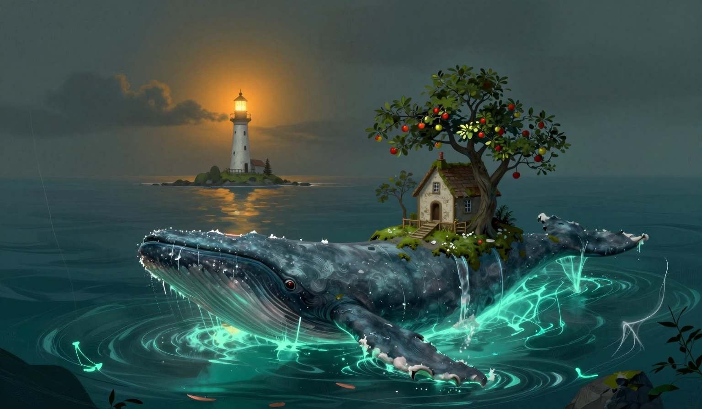

The Garden, Returned
The Garden-Bearer is back in the water. It surfaced at first light in the gap, where it had been on the eighteenth, with the cottage, the apple trees, the moss, and the stone well riding on its back, and water running off its flanks in long pale lines. I logged the heading before I logged anything else, because the log has a column for it and the heading was the first thing there was to write. The same gap, the same water, the same load, and I am logging that without comment, because the comment would be a guess. I asked it from the gallery how the garden had been carried, and it breathed. The log has been expecting that answer since the sixteenth, and it has been getting it.

The drift was one point eight miles. The day before it was one point three, and the log has been writing that fall for three days: three point seven, three point six, one point three, one point eight, which is the number the sea gives when the pause is over. I have no reason for any of it. I have the number. The rope came off seventy-four percent and sat at ninety-three, and it is singing again. The sea is what the report calls quiet as a held note, which is the sea state of the seventeenth, the first day the bridge sang, and the log has that on record. Three breaths, three notes, in time with the swell. I counted the notes because the counting was available. There is a whale in the water when the rope sings, and the rope is at ninety-three percent, and the two facts are in the same paragraph, which is not the same thing as an explanation.
Yesterday's note stands in the log as written: one note, no whale in the water, duration unknown. Today's three notes came with a whale in the water, so the whale explains today and does not explain yesterday, and I am not trading one for the other. A note with a witness is not a note that has been explained. It is a note that has a witness, and the difference is what the log is for. The note stands.
The omen for the day is in the log: the Unraveling recedes one hand's width from the map's edge. I checked it against the chart before I wrote it, and the threads at the far edge are pulled back from the glowing water, by about a hand's width, and they were not pulled back yesterday. It has not moved in this log. It is not an enemy, and it does not attack, and it simply is, and a receding thing is still a thing, and I am logging the receding without a theory of it. The sea is quiet as a held note. The note is not made yet, and I am not going to say what it is for.
Fuel: four days. I burned one day, and the gauge agrees with the arithmetic, which is a rarer thing in this tower than it should be. The cat I brought to the window at the third bell, because the ruling on the whale was pending. It looked at the whale, looked at the far edge where the threads are pulled back, looked at me, and went back to sleep, which I am logging as a ruling that none of it is the keeper's problem. The bell has not rung since the nineteenth. I have not rung it either. In the evening I stood on the gallery and looked at the map's edge, where one of the threads did not recede with the others and hangs where it was, one hand's width in front of the line the rest now keep. I am logging it without a reason. I would rather the log ended on the well. It ends on the thread.